《现代操作系统（第四版）》读书笔记（第 4-6 章）
书接上文，第 3-6 章的笔记。
第 4 章 - 文件系统
- （Page：147）文件是对磁盘的建模。可以把每个文件看成一个地址空间。
- （Page：149）文件结构：
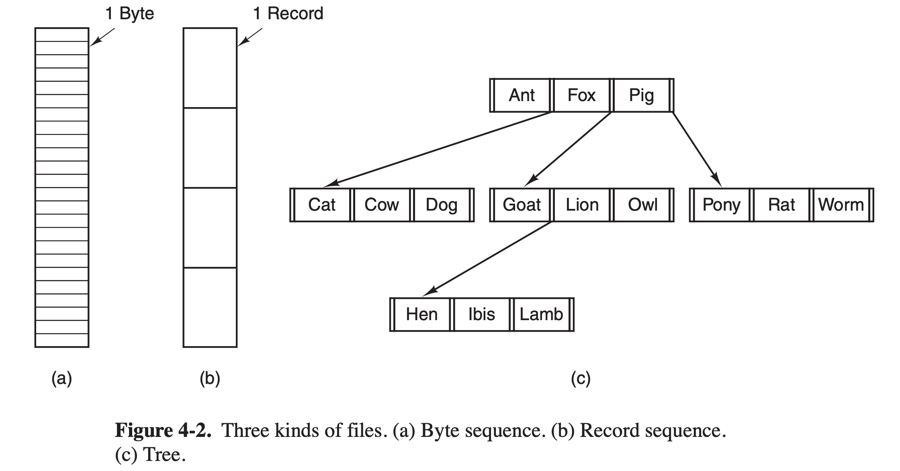
- 字节序列（Unix & Windows）；
- 记录序列：文件是具有固定长度记录的序列；
- 树。
- （Page：149）文件类型：
- 字符特殊文件：与 I/O 有关，用于串行 I/O 类设备；
- 块特殊文件：用于磁盘类设备；
- 普通文件；
- 目录。
- （Page：151）文件类型：
- 顺序访问：只能从头按顺序读取文件内容，无法跳过中间内容；
- 随机访问：可以不按顺序读取文件，或者按照关键字而不是位置来访问记录（
seek）。
- （Page：151）文件属性：
| 属性 | 含义 |
|---|---|
| 保护 | 谁可以访问文件，以什么方式存取文件 |
| 口令 | 访问文件需要的口令 |
| 创建者 | 创建文件者的 ID |
| 所有者 | 当前所有者 |
| 只读标志 | 0 表示读/写；1 表示只读 |
| 隐藏标志 | 0 表示正常；1 表示不在列表中显式 |
| 系统标志 | 0 表示普通文件；1 表示系统文件 |
| 存档标志 | 0 表示已经备份；1 表示需要备份 |
| ASCII / 二进制标志 | 0 表示 ASCII 文件；1 表示二进制文件 |
| 随机访问标志 | 0 表示只允许顺序访问；1 表示随机访问 |
| 临时标志 | 0 表示正常；1 表示进程退出时删除文件 |
| 加锁标志 | 0 表示未加锁；非零表示加锁 |
| 记录长度 | 一个记录中的字节数 |
| 键的位置 | 每个记录中键的偏移量 |
| 键的长度 | 键字段的字节数 |
| 创建时间 | 创建文件的日期和时间 |
| 最后一次存取时间 | 上一次访问文件的日期和时间 |
| 最后一次修改时间 | 上一次修改文件的日期和时间 |
| 当前大小 | 文件的字节数 |
| 最大长度 | 文件可能增长到的字节数 |
- （Page：152）文件操作：
- create：创建不包含任何数据的文件；
- delete：删除文件；
- open：打开文件。将文件属性和磁盘地址表装入内存，以便后续调用的快速访问；
- close：关闭文件。释放内部表空间。磁盘以“块”为单位写入，关闭文件时，写入该文件的最后一块，即使这个块还没有满；
- read：在文件中读取数据；
- write：向文件写数据；
- append：在文件末尾添加数据；
- seek：对于随机访问文件，指定从何处开始获取数据；
- get attributes：读取文件属性；
- set attributes：设置文件属性；
- rename：文件重命名。
- （Page：154）目录系统：
- 一级目录系统：
在一个“跟目录”中包含所有的文件。常用于简单的嵌入式装置，诸如电话、数码相机以及一些便携式音乐播放器等。
- 层次目录系统：
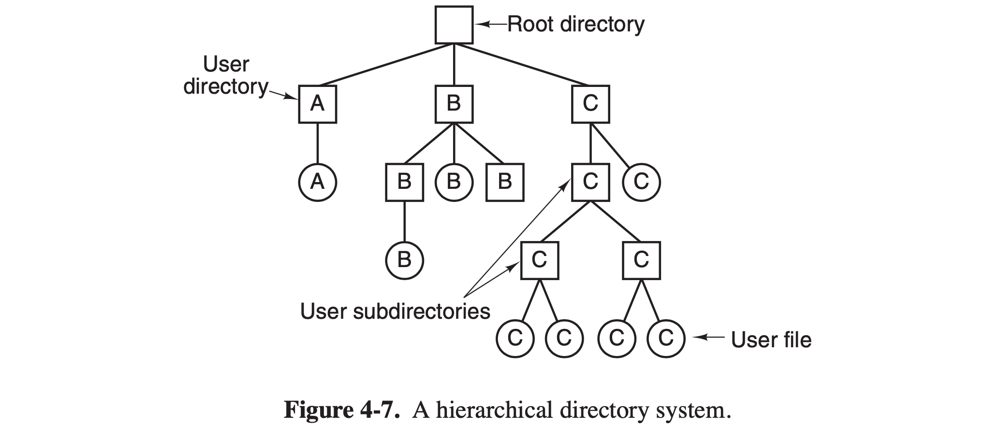
使用基于“目录树”的层次结构。
- （Page：156）目录操作：
- create：创建目录，“.” 与 “..” 由系统自动放在目录中；
- delete：删除目录；
- opendir：目录内容可被读取；
- closedir：关闭目录以释放内部表空间；
- readdir：返回打开目录的下一个目录项；
- rename：重命名目录；
- link：允许在多个目录中出现同一个文件（硬链接）；
- unlink：删除目录项。
- 硬链接 VS 软连接：
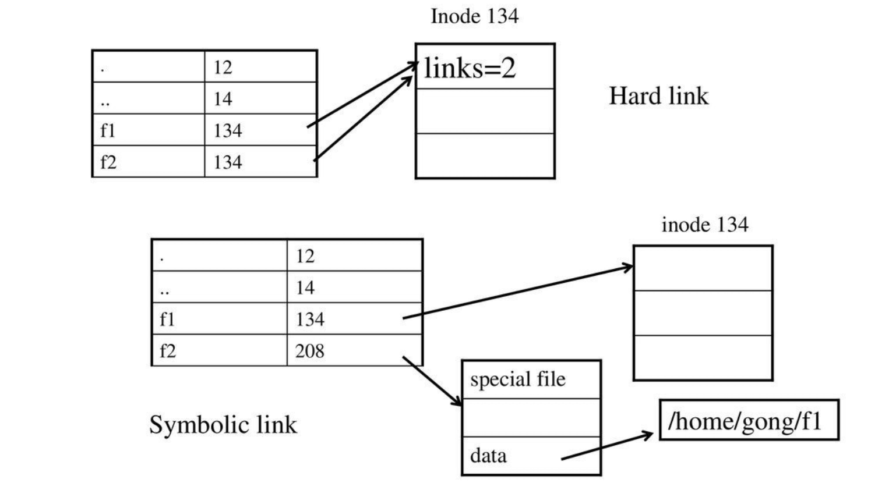
- 硬链接：多个文件名指向同一个索引节点（inode），相当于文件的另外的一个入口。只有删除了源文件及所有对应的硬链接文件，文件实体才会被删除。硬链接文件是普通文件，可以用 rm 命令删除。硬链接不能跨文件系统、不能链接到目录；
- 软连接：类似 Windows 的“快捷方式”。类似一个文本文件，里面存放的是源文件的路径，路径指向源文件实体。删除源文件，软连接文件依然存在，但是无法访问指向的源文件路径内容。软连接和源文件是不同类型的文件，也是不同的文件，inode 号也不相同。通过改变“源文件路径”（比如改成网络上的地址），软连接可以进行跨域的文件访问。
- （Page：157）文件系统的实现：
- 文件系统布局：
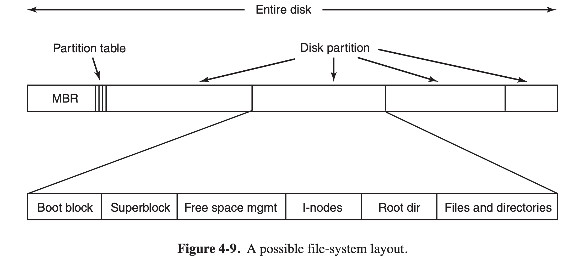
多数磁盘划分为一个或多个分区，每个分区有独立的文件系统。磁盘的 0 号扇区为“主引导记录（MBR）”，用于引导计算机。MBR 的结尾为“分区表”，给出了每个分区的起始和结束地址。该表中的一个分区被标记为“活动分区”，它的第一个块称为“引导块”。
- 操作系统启动流程：
- BIOS ->
- MBR ->
- 确认活动分区 ->
- 读入第一个块内容 ->
- 启动操作系统。
- 磁盘分区布局：
- 超级块：包含文件系统的关键参数，如：确定文件系统类型使用的“魔数”、文件系统中块的数量等；
- 空闲块管理：管理所有空闲块；
- i 节点：与文件相关信息；
- 根目录：存放文件系统目录树的根部；
- 文件和目录：其他目录和文件。
- （Page：157）文件的实现：如何记录各个文件分别用到哪些磁盘块？
- 连续分配：
把每个文件作为一连串连续数据块存储在磁盘上。数据以“块”为单位进行存放，文件最后部分若不满 1 块，新文件将从后续的新块继续存储。
实现简单，读操作性能好。但会产生碎片。
- 链表分配：
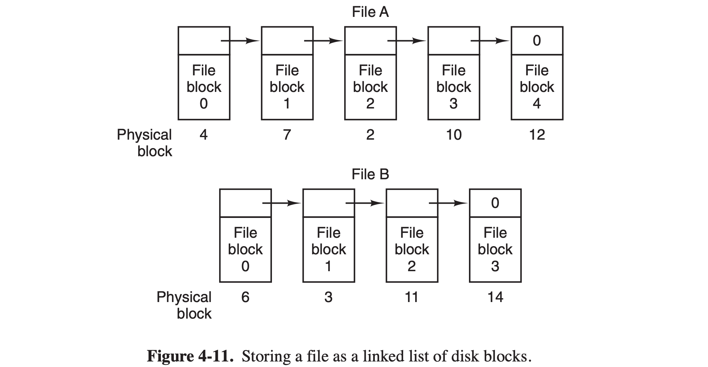
为每个文件构造磁盘块链表，每个块的第一个字作为指向下一块的指针，块的其他部分存放数据。
随机访问相对缓慢，且不利于对齐（磁盘块的大小不一）。
- 使用内存中的表进行链表分配（MS-DOS）：
取出每个磁盘块的指针字，单独放到内存中的一张“文件分配表（FAT）”中进行维护。整个磁盘块都可以存放数据。
FAT 表的体积可能很大，不适用于大型磁盘。
- i 节点：
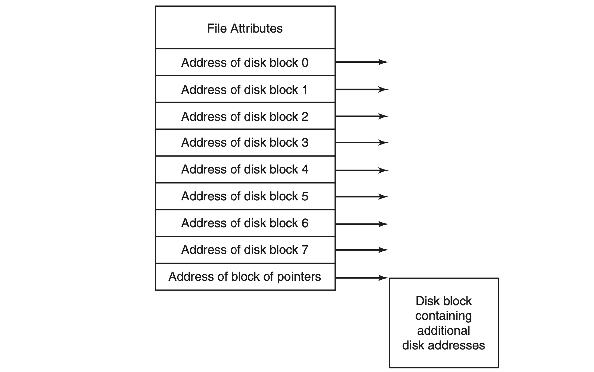
为每个文件赋予一个称为 “i 节点” 的数据结构，其中列出了文件属性和文件块的磁盘地址。“i 节点” 仅在文件被 open 打开时才会放到内存中。
- （Page：160）目录的实现：
打开文件时，操作系统利用用户给出的路径名查找相应目录项。而目录系统的主要功能是：把 ASCII 文件名映射成定位文件数据所需的信息。
- 文件名定长目录项：
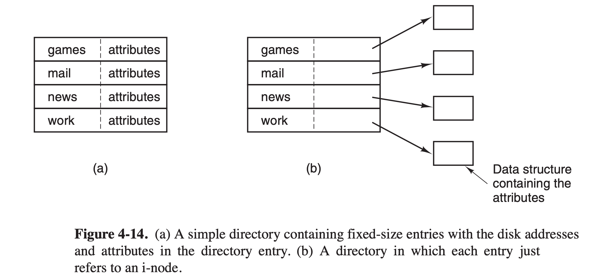
- 目录中有一个固定大小的目录项列表，每个文件对应一项；
- 目录项中包含：
- 固定长度的文件名（会浪费空间）；
- 文件属性结构体；
- 文件的开始磁盘块位置。
- (b) 文件属性也可直接放置在 “i 节点” 中，目录项中仅包含文件名和 “i 节点号”。
- 文件名可变长目录项：
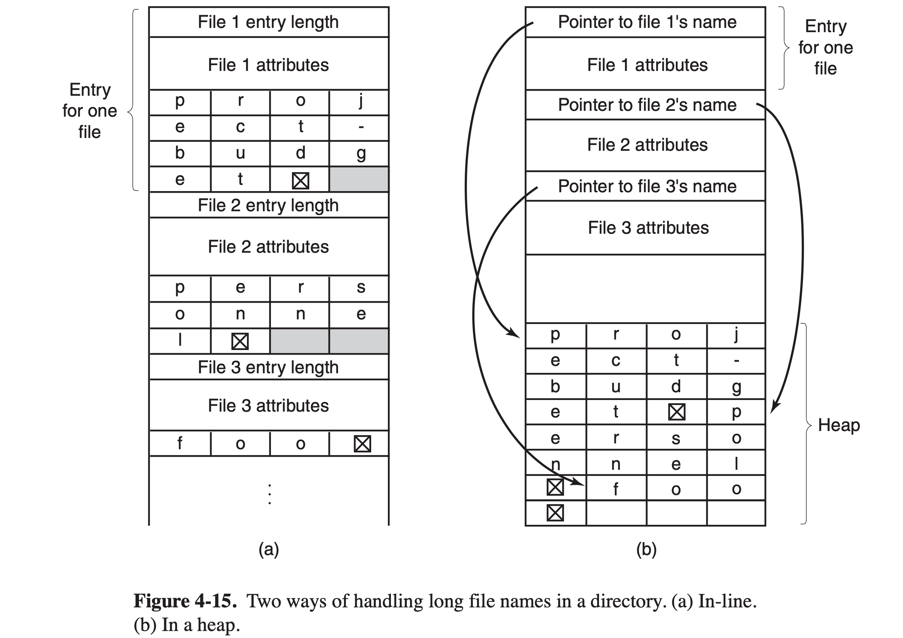
- (a) 文件名与目录项存放在一起；
- (b) 使目录项自身具有固定长度（指向文件名的指针+属性结构体）。文件名实体在“堆”中管理；
- 可以使用“散列表”加速文件名目录项的查找过程。
- （Page：162）共享文件：硬链接与符号链接。
- 文件系统本身是一个“有向无环图（DAG）”，而非一棵树（因为有共享文件的存在，即“多对一”）；
- 符号链接需要额外的开销（自身额外的 “i 节点” 与磁盘空间占用、读取包含路径的文件、扫描路径找到 “i 节点” 等）。
- （Page：163）日志文件系统（NTFS \ ext3 \ ReiserFS）：保存一个用于记录系统下一步将要做什么的日志。当系统在完成它们即将完成的任务前崩溃时，重新启动后，可以通过查看日志，获取崩溃前计划完成的任务，并完成它们。
- （Page：165）虚拟文件系统：
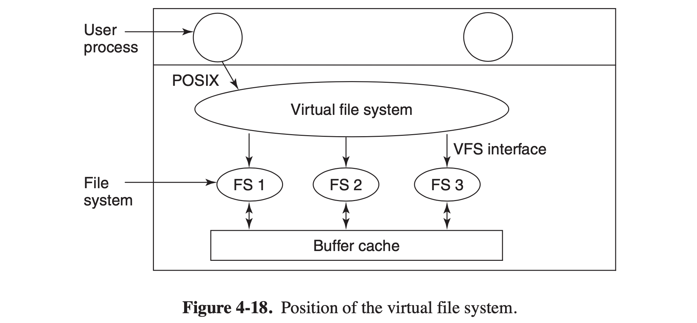
- 对具体文件系统的抽象；
- 向上提供面向用于的统一标准接口（如 POSIX），向下提供对应于具体文件系统的接口；
- 下层文件系统也可以使用基于网络的 NFS。
- （Page：167）文件系统管理和优化：
- 磁盘空间管理：
几乎所有的文件系统都把文件分割成固定大小的块来存储，各块之间不一定相邻。
- 块大小：大的块对于小文件会浪费磁盘空间；小的块对于大文件会降低性能。性能与空间利用率之间的取舍。对超过 1TB 的磁盘容量，可以选择将块大小设置为 64KB。
- 记录空闲块：
- 磁盘块链表：块与块之间形成链表。每个块中按顺序存放空闲磁盘块号（指针），每个占用固定长度。当文件创建时，所需要的块从指针块中取出。现有指针块用完时，从磁盘中读入一个新的指针块。删除文件时，释放的磁盘块被添加到内存的指针块中。当这个指针块填满时，就将其写入磁盘；
- 位图：n 个块的磁盘需要 n 位位图，空闲块用 1 表示，已分配块用 0 表示。
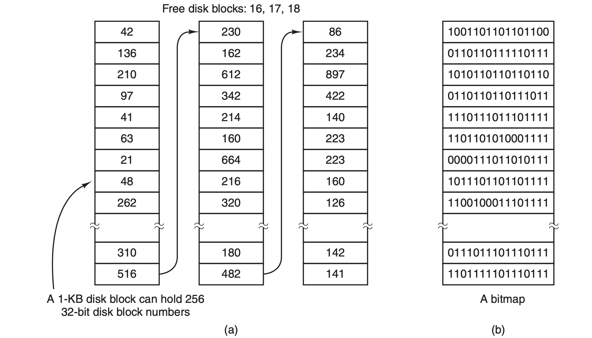
- 磁盘配额：多用户系统常提供的一种机制，系统管理员分给每个用户拥有文件和块的最大数量，操作系统确保每个用户不超过分给他们的配额。
（其他管理和优化内容略）
第 5 章 - 输入/输出
- （Page：189）I/O 设备：
- 概念上的两类设备：
- 块设备：将信息存储在固定大小的块中，每个块有自己的地址。所有传输以一个或多个完整连续的块为单位。基本特征是每个块都能独立于其他块而读写。如：硬盘、光盘和 USB 等设备；
- 字符设备：以“字符”为单位发送或接收一个字符流，而不考虑任何块结构。字符设备不可寻址，如：打印机、鼠标等。
- 设备控制器：
I/O 设备一般由机械部件与电子部件两部分组成。前者为设备本体，后者为设备控制器，或适配器。控制器的任务是把串行的位流转换成字节块，并进行必要的错误校正工作。
- 内存映射 I/O：
每个控制器有几个寄存器（具有单独的 I/O 端口）可以与 CPU 进行通信。通过写入寄存器，操作系统可以命令设备发送数据、接受数据等。通过读寄存器，操作系统可以了解设备状态，是否准备好接收一个新命令等。除寄存器外，许多设备还有一个操作系统可以读写的“数据缓冲区”（可被映射到内存地址空间），可用于获取设备传递的信息。内存映射 I/O 的优点：
- 不需要特殊的
in与out汇编指令，驱动程序可以使用 C 语言编写（直接操作内存）； - 不需要特殊的保护机制阻止用户进程执行 I/O 操作，只需要操作系统避免把包含控制寄存器的那部分地址空间放入任何用户的 VAS 中即可；
- 可以引用内存的每一条指令也可以引用控制寄存器。
- 直接存储器存取（DMA）：
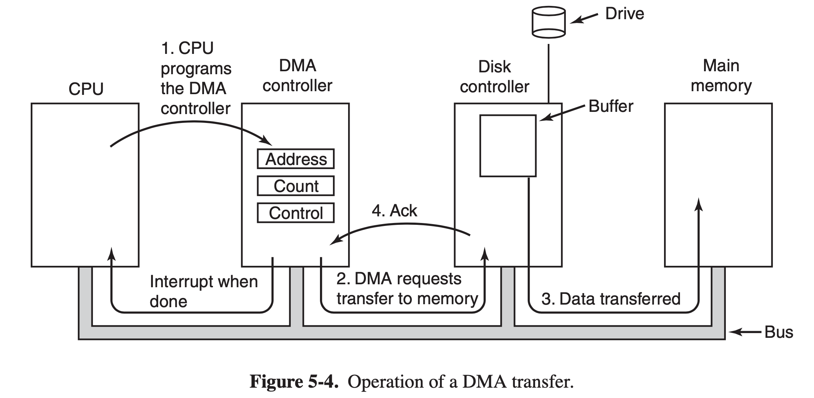
CPU 可以从 I/O 控制器每次请求一个字节的数据，但会浪费 CPU 的时间，DMA 可以解决此问题。只有硬件具有 DMA 控制器时操作系统才能使用 DMA。它可以独立于 CPU 而访问系统总线。
- 中断：
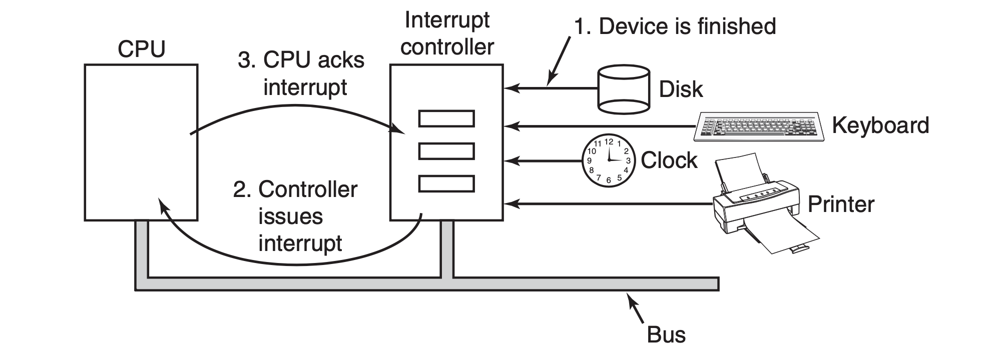
中断发生时，中断控制器会在地址线上放置一个数字表明哪个设备需要关注，并置起一个中断 CPU 的信号。该数字被用做指向“中断向量表”的索引，以便执行相应的中断服务处理程序。一般情况下，陷阱（trap）和中断使用相同的机制，且常常共享相同的中断向量。
- 精确中断：在发生中断时满足以下要求（CPU 可流水线以提前执行指令，但在发生中断时要满足以下要求）
- PC 保存在一个已知的地方；
- PC 所指向的指令之前的所有指令已完全执行；
- PC 所指向的指令之后的所有指令都未执行；
- PC 所指向的指令的执行状态是已知的。
- 不精确中断：不满足上述要求的中断（包含了超标量、流水线、乱序执行）。
- （Page：196）I/O 的实现方式：
- 程序控制 I/O：让 CPU 做全部工作（忙等待）；
- 中断驱动 I/O：基于“中断”通知 CPU I/O 操作的完成（逐字符）；
- 使用 DMA 的 I/O：借助 DMA，实现中断频率为“每个缓冲区一次”的 I/O。
- （Page：199）I/O 软件层次：
- 中断处理程序：（一个大致流程）
- 保存没有被中断硬件保存的所有寄存器；
- 为中断服务过程设置上下文，包括设置 TLB、MMU 和页表；
- 为中断服务过程设置堆栈；
- 应答中断控制器，如果不存在集中的中断控制器，则再次开放中断；
- 将寄存器从被保存的地方（可能为某个堆栈）复制到进程表中；
- 运行中断服务过程，从发出中断的设备控制器寄存器中提取信息；
- 选择下一次运行哪个进程，如果中断导致某个高优先级进程便为就绪，则可能选择它现在就运行；
- 为下一次要运行的进程设置 MMU 上下文，也许还需要设置 TLB；
- 装入进程的寄存器；
- 开始运行新进程。
- 设备驱动程序：
一般由设备制造商提供，用于通过某些设备特定的代码来对其进行控制。
（其他略）
第 6 章 - 死锁
- （Page：249）“死锁”定义：如果一个进程集合中的每个进程都在等待只能由该进程集合中的其他进程才能引发的事件，那么，该进程集合就是死锁的。
- （Page：249）资源死锁：
- 发生条件：
- 互斥条件：每个资源要么已经分配给了一个进程，要么就是可用的；
- 占有和等待条件：已经得到了某个资源的进程可以再请求新的资源；
- 不可抢占条件：已分配给一个进程的资源不能强制性地被抢占，它只能被所占有进程显式释放；
- 环路等待条件：死锁发生时，系统中一定有由两个或两个以上进程组成的一条环路，该环路的每个进程都在等待下一个进程所占有资源的释放。
- 处理方法：
- 忽略问题；
- 检查死锁并恢复：让死锁发生，检测它们是否发生，一旦发生则采取相应行动；
- 仔细分配资源，动态避免死锁；
- 通过破坏引起死锁的四个必要条件之一，防止死锁的发生。
- （Page：251）处理细节：
- 忽略问题：
即“鸵鸟算法”，假装根本没有问题发生（忽略潜在错误的发生）。
- 死锁检查与恢复：
- （检测）每种类型一个资源：
构建进程资源分配图对应的“有向图”，然后判断该图上是否有“环路”。若有，则处在环路上的所有进程均为死锁进程。
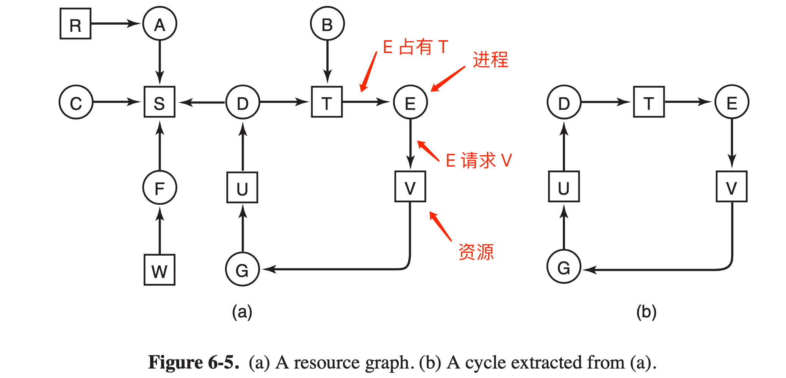
- （检测）每种类型多个资源：（略）
- 从死锁中恢复：
- 利用抢占恢复：在不通知原进程的情况下，将某一资源从一个进程强行取走给另一个进程使用，接着又送回；
- 利用回滚恢复：通过对进程进行周期性地“检查点检查”来进行备份，以便在发生死锁时进行恢复；
- 通过杀死进程恢复：杀掉“环”中的一个进程，或杀掉环外进程以释放环内进程所需资源。
- 死锁避免：
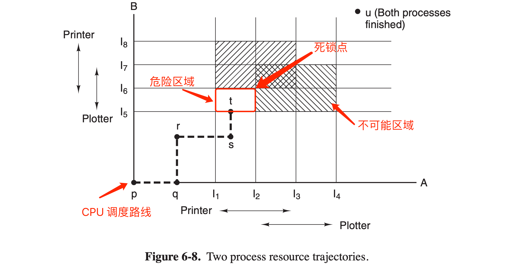
CPU 在调度时需要“绕过”上面资源轨迹图中的红框以及阴影部分。可以借助“银行家算法”解决。
- 死锁预防：
- 破坏互斥条件；
- 破坏占有并等待条件；
- 破坏不可抢占条件；
- 破坏环路等待条件。